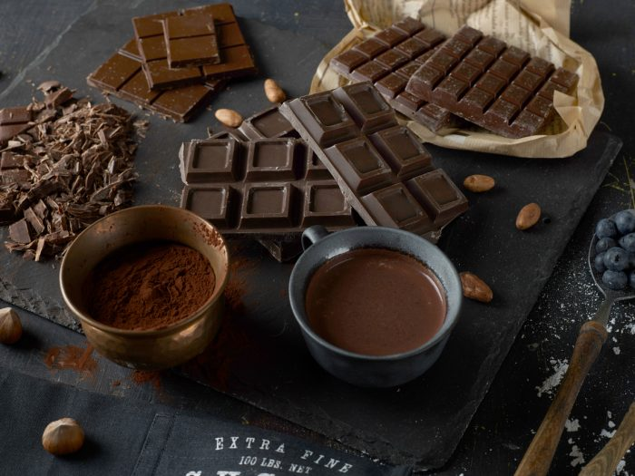

The Pros of Chocolate
Chocolate isn't food that is bad for you even thought it can make you look like CaseOh. It has some really good pros for your life and health:
- Chocolate is rich in antioxidants that help with protecting the body's cells.
- It has flavanols that can improve your mood and make you a happy sigma instead of a depressed emo.
- It helps you when you have low blood flow.
- It gives energy because of the sugars in it.
The Cons of Chocolate
Sadly nothing can be perfect besides the 992 generation of Porsche so chocolate has it's bad sides too:
- It is high in calories and sugar which aren't the best for your health and can make you as big as CaseOh if eaten so much.
- It can trigger head aches and if you eat it much it sure will give you one.
- It can make you addicted to it because of the sugars and flavonols mentioned earlier.
- Can give you an allergic reaction mostly if you're allergic to nuts and milk.

Life is short so don't worry about the foods you eat. If you want to stay healthy and eat chocolate just eat it in small portions don't be CaseOh, you don't need to eat one ton to enjoy it.